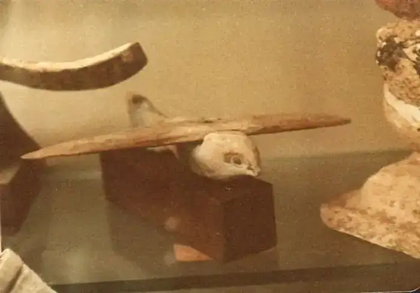
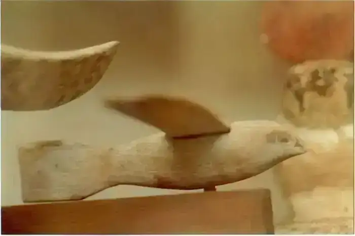

The object
The Saqqara bird was found in 1898 in a tomb at Saqqara and is dated to about 200 BC. It is carved from sycamore wood, about 18 cm long, with wings that are straight rather than curved. It is displayed in the Egyptian Museum in Cairo.
Maps, diagrams and images




In 1972 an Egyptian physician, Khalil Messiha, argued that it was a model aeroplane — a glider — and that its shape implied aerodynamic knowledge. The claim entered the ancient-technology literature and has been repeated ever since.
The analysis
The object lacks the features that make an aircraft. There is no vertical stabiliser, so it has no yaw control; the wings have no camber, so they generate no useful lift; and the body is too heavy for the wing area. Replicas built to the original dimensions glide poorly or not at all, and only fly when modified — with a tail fin added.
The Egyptological reading is that it is a bird model, of a type common in Egyptian tombs, probably a falcon or a similar species, and possibly a finial or a toy. Its wings are not shaped like a bird's in flight, which is the puzzle — but a puzzle is not an aircraft.
Documented: a wooden bird model from Saqqara, c. 200 BC, in the Egyptian Museum.
Documented: the 1972 aircraft claim, and the replicas built to test it.
Not supported: aerodynamic function. No tail, no camber, too heavy for its wing area.
Not supported: any evidence of aviation in ancient Egypt.
Why the label is debunked: the claim was tested by building the thing, and it did not fly.
Why it is in the archive
Because it is the archetypal out-of-place artefact: an object with an odd shape, read as technology, and settled by the cheapest possible experiment — a replica and a glide test.
Open resources on this topic
- PapersOpen-access articles: DOAJ · PubMed Central · Internet Archive Scholar
- BooksPublic-domain and borrowable copies: Open Library · Project Gutenberg · Google Books · Internet Archive
More images
Cite this page
Momin, S. (2026). The Saqqara Bird. The Larger World Archive. https://drsamonline.github.io/LARGE_GLOBE/saqqara-bird.htmlMomin, Sohil. “The Saqqara Bird.” The Larger World Archive, 2026, https://drsamonline.github.io/LARGE_GLOBE/saqqara-bird.html.Momin, Sohil. “The Saqqara Bird.” The Larger World Archive, 2026. https://drsamonline.github.io/LARGE_GLOBE/saqqara-bird.html.@misc{the2026saqqara,
author = {Momin, Sohil},
title = {The Saqqara Bird},
year = {2026},
howpublished = {The Larger World Archive},
url = {https://drsamonline.github.io/LARGE_GLOBE/saqqara-bird.html},
note = {Last reviewed 20 November 2026}
}Last reviewed 20 November 2026 · Corrections policy · this page is not peer reviewed
Sources for this page
- Wikipedia, “Saqqara Bird” — the object and the aircraft claimen.wikipedia.org
- Wikipedia, “Saqqara” — the siteen.wikipedia.org
- Wikipedia, “Ancient Egyptian technology” — what was actually builten.wikipedia.org
- Wikipedia, “Out-of-place artifact” — the genre this belongs toen.wikipedia.org